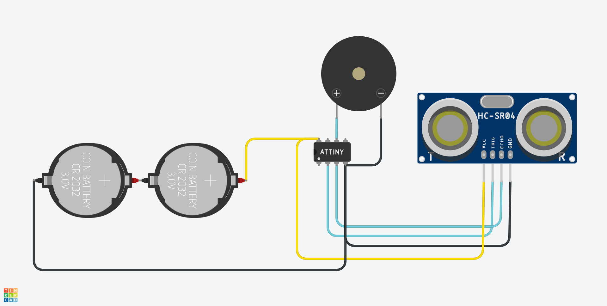

Assistive technology prototype for the visually impaired, utilizing ATtiny85 and Ultrasonic Sensing.
Form Factor: Sports Glasses. HC-SR04 positioned at the front bridge, with ATtiny85, Buzzer, and Battery routed inside the right and left temples.

Memuat baris kode...